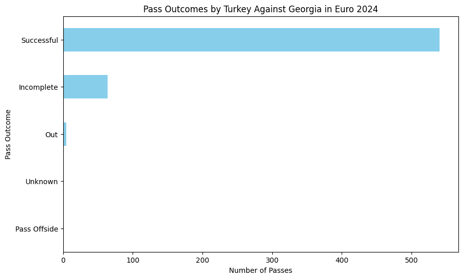
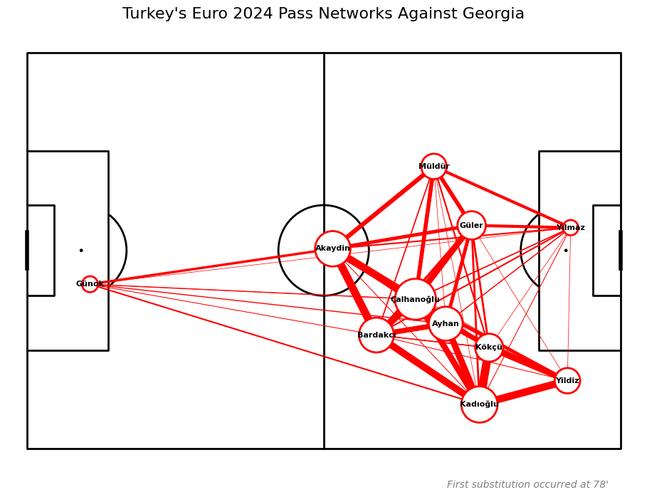
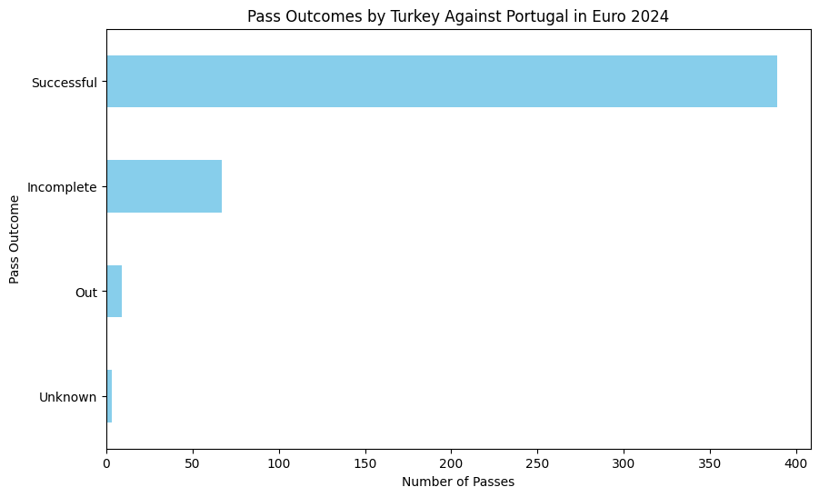
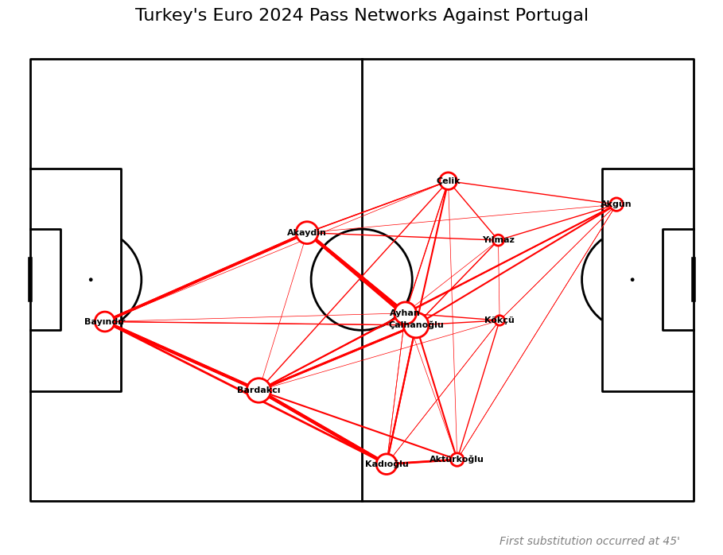
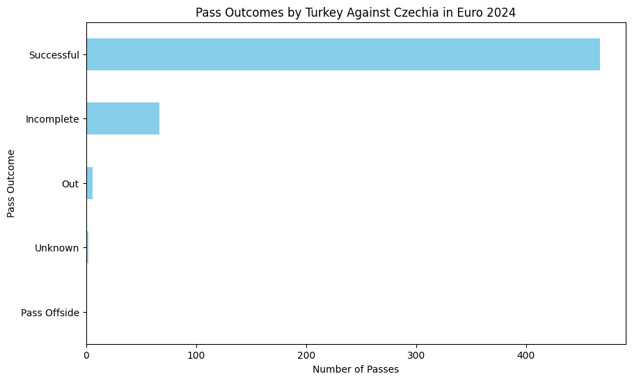
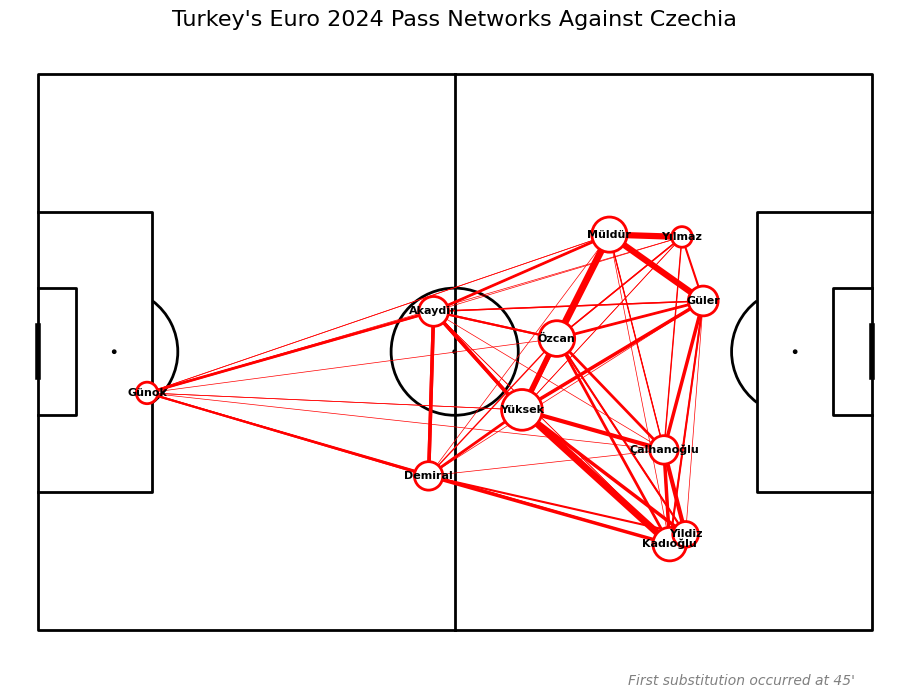
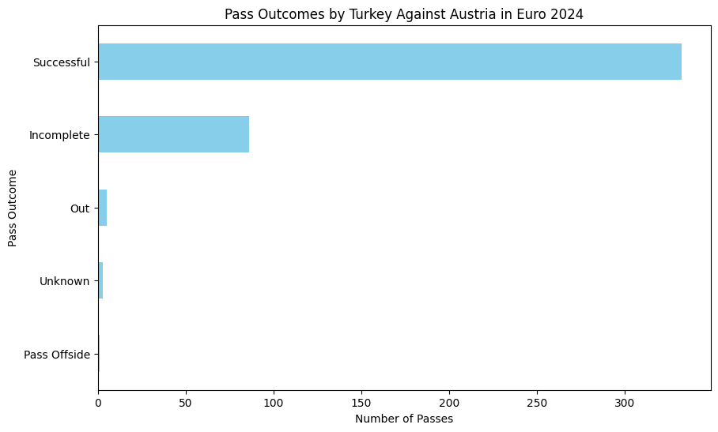
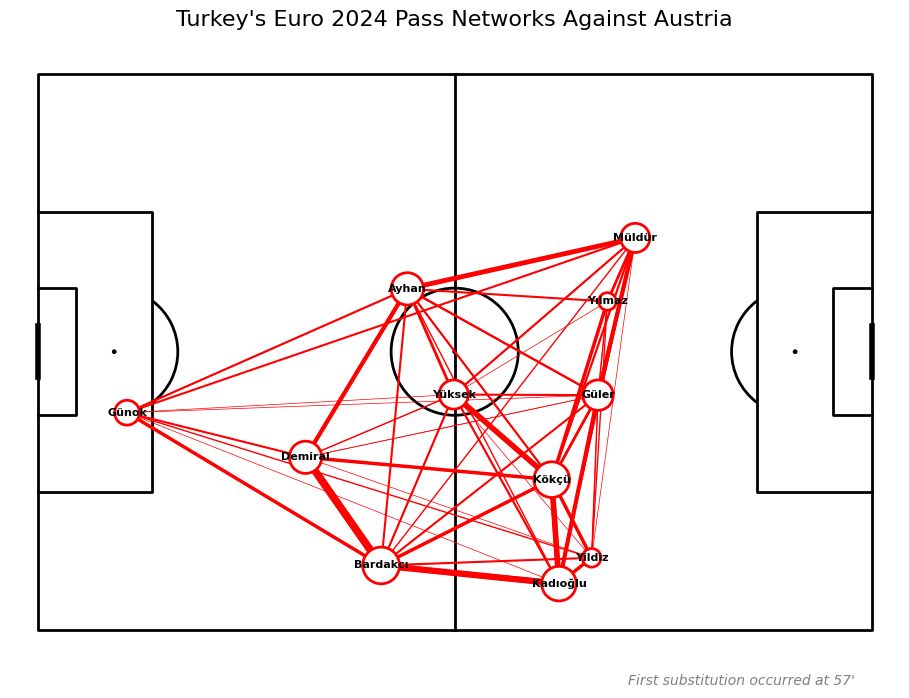
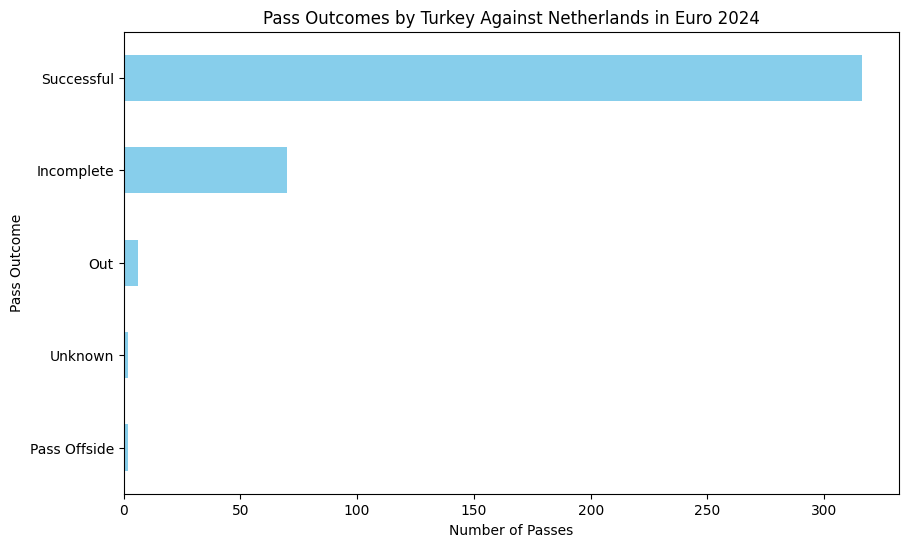
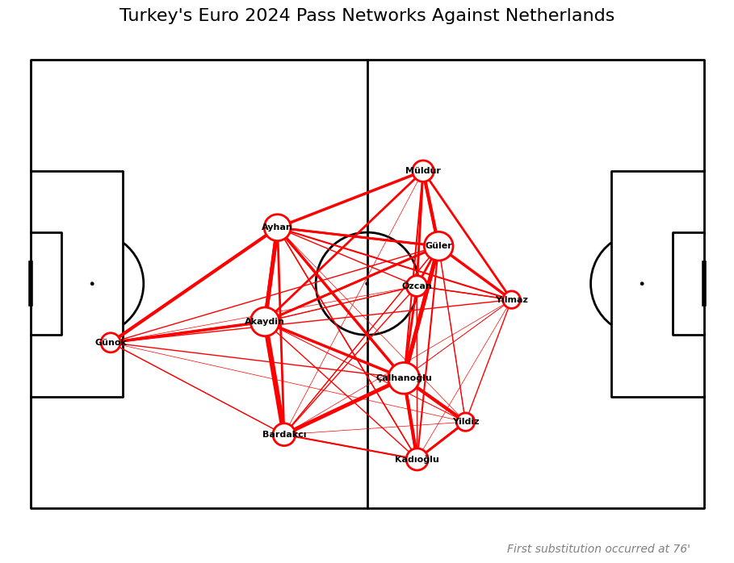

from mplsoccer import Pitch, Sbopen
import matplotlib.pyplot as pltGiriş
Pas ağı haritası, bir futbol takımının maç sırasında gerçekleştirdiği pasların sahada nasıl dağıldığını ve hangi oyuncular arasında gerçekleştirildiğini görsel olarak sunan bir analiz aracıdır. Bu harita, takımın pas oyununu ve saha içindeki bağlantılarını detaylı bir şekilde ortaya koyarak, oyuncular arasındaki iletişimi ve takımın genel oyun stratejisini anlamamıza yardımcı olur. Pas ağı haritası, takımın topa sahip olma becerisini, oyun akışını ve pas kombinasyonlarının etkinliğini değerlendirmek için kritik bir araçtır. Bu sayede takımın oyun düzeni ve stratejik yaklaşımları hakkında derinlemesine bilgi sağlar.
Kullanılacak Kütüphaneler
Maçlar
StatsBomb’dan (Sbopen) çekilecek maçların ID’leri şöyledir:
- Türkiye - Gürcistan: 3938639
- Türkiye - Portekiz: 3930174
- Çekya - Türkiye: 3930184
- Avusturya - Türkiye: 3941022
- Hollanda - Türkiye: 3942382
Maçlara ait ID’leri öğrenmek için StatsBomb Verilerine Erişim: Euro 2024 Örneği başlıklı yazıyı inceleyebilirsiniz.
Pas Sonuç Tipleri
- Successful: Pasın başarılı bir şekilde hedef oyuncuya ulaştığını gösterir.
- Incomplete: Pasın başarılı bir şekilde tamamlanmadığını, yani hedef oyuncuya ulaşmadığını ifade eder.
- Out: Pasın oyun alanı dışına çıktığını belirtir.
- Pass Offside: Pasın, topa vurulan oyuncunun ofsayt pozisyonunda olduğunu belirtir.
- Unknown: Pasın sonucunun belirli bir nedenden ötürü bilinmediğini veya kaydedilemediğini gösterir.
Pas Ağı Haritasının Oluşturulması
Veri Çerçevesinin İçeriği
df veri çerçevesindeki type_name kolonundan Pass’i filtreleyeceğiz. Ardından outcome_name kolonundan (daha çok Successful olanlar) ilerleyeceğiz ve team_name Türkiye olacak.
StatsBomb’un outcome_name kolonunda Successful’u temsilen NaN vardır ancak biz değişim yapacağız.
Verilerin Çekilmesi
team = 'Turkey'
matches = {
'Georgia': 3938639,
'Portugal': 3930174,
'Czechia': 3930184,
'Austria': 3941022,
'Netherlands': 3942382
}Pas Sonuçlarının Dağılımı ve Pas Ağı Haritası
for opponent, match_id in matches.items():
parser = Sbopen()
df, related, freeze, tactics = parser.event(match_id)
df = df[df['team_name'] == team]
passes = df[df['type_name'] == 'Pass'].copy()
passes['outcome_name'] = passes['outcome_name'].fillna('Successful')
plt.figure(figsize=(10, 6))
pass_outcome_counts = passes['outcome_name'].value_counts().sort_values()
pass_outcome_counts.plot(kind='barh', color='skyblue')
plt.xlabel('Number of Passes')
plt.ylabel('Pass Outcome')
plt.title(f'Pass Outcomes by {team} Against {opponent} in Euro 2024')
plt.show()
successful_passes = passes[passes['outcome_name'] == 'Successful']
first_sub = df[df['type_name'] == 'Substitution']['minute'].min()
successful_passes = successful_passes[successful_passes['minute'] < first_sub]
passer_avg_loc = successful_passes.groupby('player_name').agg(
avg_x=('x', 'mean'),
avg_y=('y', 'mean'),
pass_count=('id', 'size')
).reset_index()
pass_between = successful_passes.groupby(['player_name', 'pass_recipient_name']).size().reset_index(name='pass_between_count')
pass_between = pass_between.merge(passer_avg_loc, left_on='player_name', right_on='player_name')
pass_between = pass_between.merge(passer_avg_loc, left_on='pass_recipient_name', right_on='player_name', suffixes=['', '_end'])
passer_avg_loc['player_name'] = passer_avg_loc['player_name'].apply(lambda name: name.split()[-1])
pass_between['player_name'] = pass_between['player_name'].apply(lambda name: name.split()[-1])
pass_between['pass_recipient_name'] = pass_between['pass_recipient_name'].apply(lambda name: name.split()[-1])
pitch_length_x = 120
pitch_width_y = 80
pitch = Pitch(pitch_type='custom', pitch_length=pitch_length_x, pitch_width=pitch_width_y, line_color='black')
fig, ax = pitch.draw(figsize=(10, 7))
pass_lines = pitch.lines(
1.2 * pass_between.avg_x,
0.8 * pass_between.avg_y,
1.2 * pass_between.avg_x_end,
0.8 * pass_between.avg_y_end,
lw=pass_between.pass_between_count * 0.5,
color='red',
zorder=1,
ax=ax
)
nodes = pitch.scatter(
1.2 * passer_avg_loc.avg_x,
0.8 * passer_avg_loc.avg_y,
s=20 * passer_avg_loc['pass_count'].values,
color='white',
edgecolors='red',
linewidth=2,
alpha=1,
zorder=1,
ax=ax
)
for index, row in passer_avg_loc.iterrows():
pitch.annotate(
row['player_name'],
xy=(1.2 * row.avg_x, 0.8 * row.avg_y),
c='black',
fontweight='bold',
va='center',
ha='center',
size=8,
ax=ax
)
fig.suptitle(f"{team}'s Euro 2024 Pass Networks Against {opponent}", fontsize=16)
ax.text(
0.95, -0.05,
f"First substitution occurred at {first_sub}'",
color='gray',
va='bottom',
ha='right',
fontsize=10,
fontstyle='italic',
transform=ax.transAxes
)
plt.show()Kodun kilit yerlerine bakalım.
outcome_name kolonunda NaN olan yerleri başarılı pası temsil ettiği için Successful ile doldurduk ve sonrasında başarılı pasları filtreledik.
Pas ağı haritası ilk oyuncu değişikliği gerçekleşene kadardır. Bu nedenle, type_name kolonundan Substitution olanları filtreleyip minimum, yani ilk oyuncu değişikliğinin gerçekleştiği dakikayı aldık. Ardından, successful_passes veri çerçevesini bu değerden küçük olanları bırakacak şekilde filtreledik.
passer_avg_loc ile pas yapan oyuncuların ortalama konumlarını hesapladık.
pass_between’de oyuncular arası pas akışını bir araya getirdik.
Pitch sınıfını kullanarak siyah çizgili bir futbol sahası (pitch) oluşturduk ve fig, ax değişkenleri aracılığıyla sahanın çizildiği figür ve eksenleri elde ettik. figsize parametresiyle figürün boyutlarını belirledik (10x7 inç).
pitch_length_x ve pitch_width_y değişkenleri ile futbol sahasının uzunluğunu ve genişliğini ayarladık. Bu değerler saha üzerinde şutların yerleştirilmesinde kullanılan koordinat sınırlarını belirliyor.
pitch.lines ile pas yapan ve pası alan oyuncular arasındaki bağlantıları çizgi şeklinde gösterdik, bu sayede pas ağlarını ve yoğunluklarını görselleştirdik.
pitch.scatter ile oyuncuların saha üzerindeki konumlarını görsel olarak temsil eden ve pas sayılarına göre boyutlandırılmış beyaz noktalar çizdik. Noktaların kenarları kırmızı renk ile belirginleştirildi.
pitch.annotate ile oyuncuların saha üzerindeki konumlarına ad etiketleri ekledik, böylece her oyuncunun adını grafikte göstermiş olduk.










Gelecek içeriklerde görüşmek dileğiyle.